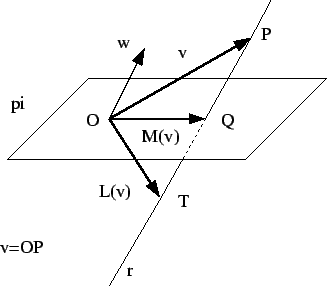

| Questão | Valor | Nota | Revis. | |||||
| 1a | 0.5 | |||||||
| 1b | 1.0 | |||||||
| 1c | 1.0 | |||||||
| 1d | 0.5 | |||||||
| 1e | 0.5 | |||||||
| 1f | 0.5 | |||||||
| 2a | 0.5 | |||||||
| 2b | 0.5 | |||||||
| 2c | 0.5 | |||||||
| 2d | 0.5 | |||||||
| 3a | 1.0 | |||||||
| 3b | 1.0 | |||||||
| 3c | 0.5 | |||||||
| 3d | 1.5 | |||||||
| Total | 10.0 |
1)
Considere a família de vetores de

1.a)
Estude se os vetores da família  são linearmente independentes.
são linearmente independentes.
1.b)
Determine todas as bases de
 formadas por vetores diferentes
que podem ser obtidas
usando os vetores de
formadas por vetores diferentes
que podem ser obtidas
usando os vetores de  (isto é, bases formadas pelos mesmos vetores em ordem diferente
contam como a mesma, ou seja,
as bases
(isto é, bases formadas pelos mesmos vetores em ordem diferente
contam como a mesma, ou seja,
as bases  e
e  contam uma única
vez).
contam uma única
vez).
Considere agora a família de vetores de

1.c)
Veja que
é uma base de
 .
.
1.d) Determine as coordenadas do vetor (3,6,5) na base .
1.e) Considere agora o vetor w que na base tem coordenadas (isto é, . Determine as coordenadas de w na base canônica.
1.f)
Considere agora os vetores w1, w2 e w3 que na base têm coordenadas
2)
Considere o vetor u=(1,1,1) e a transformação linear
definida como
3)
Dados o plano
 e o vetor w=(1,1,1),
considere a transformação linear M definida
como segue.
Dado um ponto P=(x,y,z) considere o vetor
e defina
e o vetor w=(1,1,1),
considere a transformação linear M definida
como segue.
Dado um ponto P=(x,y,z) considere o vetor
e defina
Considere também a transformação linear L definida como
segue,
pi rr
ww
v=OP
rr
ww
v=OP
 PP
QQ
OO
vv
TT
M(v)M(v)
L(v)L(v)
PP
QQ
OO
vv
TT
M(v)M(v)
L(v)L(v)
